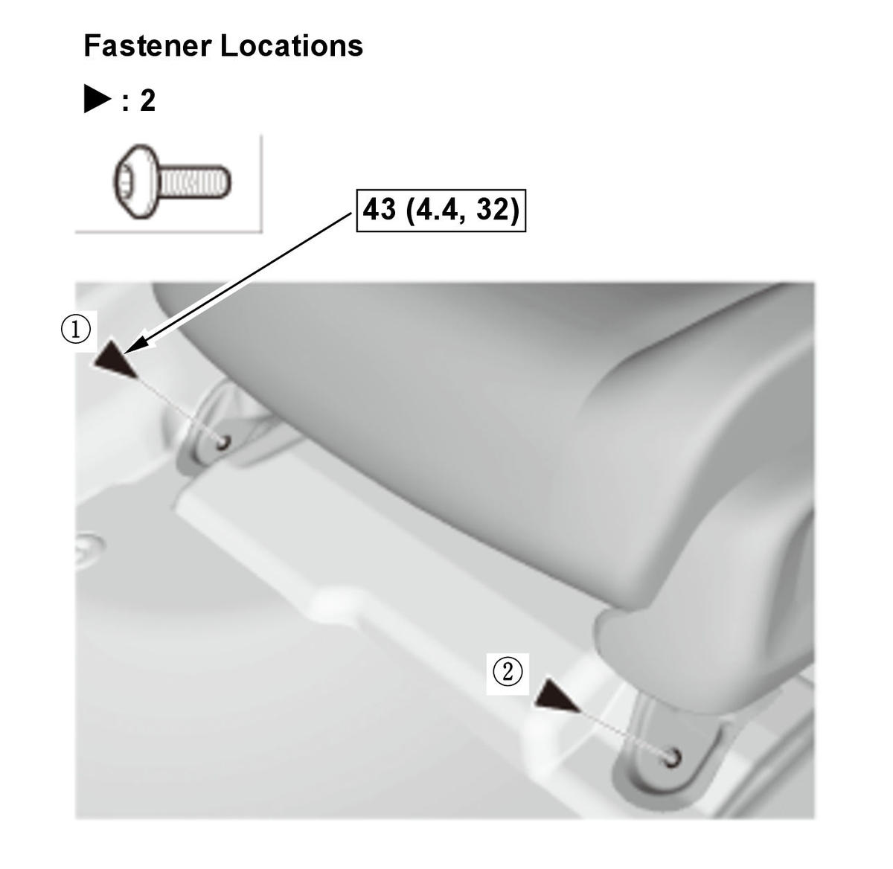
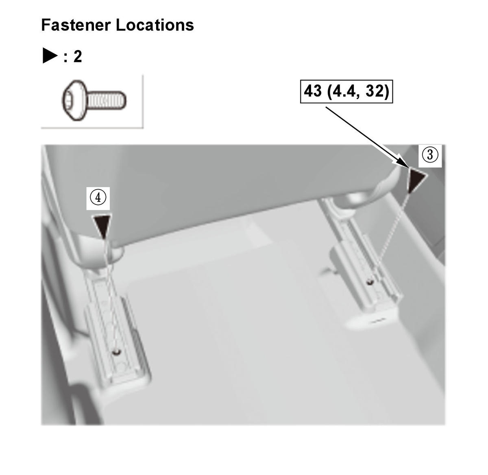
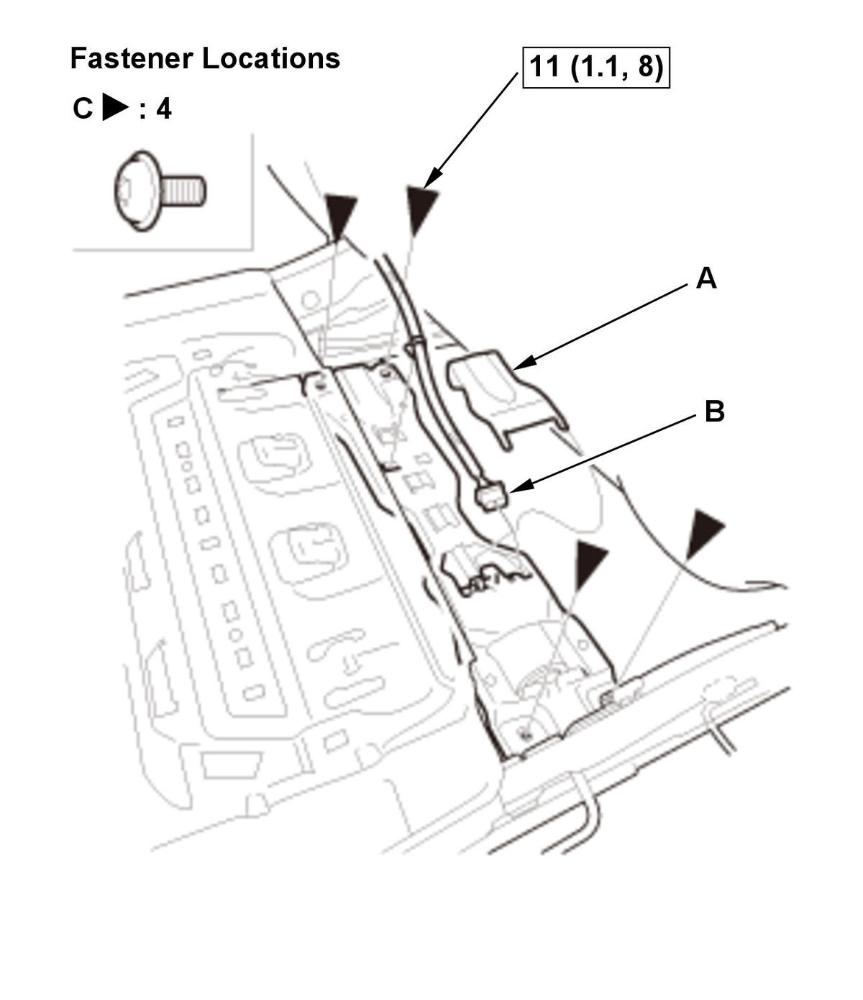

Removal and Installation
SRS components are located in this area. Review the SRS component locations and the precautions and procedures before doing repairs or service.
NOTE: How to read the torque specifications .
- Front Seat Mounting Bolts - Remove
Rear side
Front side
- 12 Volt Battery Terminal - Disconnect
NOTE: Wait at least 3 minutes before starting work.
- Front Seat - Remove
1. Lift up the front seat, then disconnect the connectors (A) and remove the harness clips (B). 2. Remove the head restraint. 3. With the help of an assistant, carefully remove the front seat (A) through the front door opening.
NOTE:
- Power seat: Use the rubber pads (B) to support the front seat.
- Power seat: Take care not to damage the slide motor (C).
- All Removed Parts - Install

Courtesy of HONDA, U.S.A., INC.
Courtesy of HONDA, U.S.A., INC.1. Install the parts in the reverse order of removal.
NOTE: Tighten the bolts by hand first, then tighten them to the specified torque in the sequence shown. - Front Passenger's Weight Sensor - Operation Check
How to Access the Front Seat Rear Mounting Bolts for the Case of the Seat Slide Motor Malfunction (If the slide position is rear most)
- Front Seat Rear Mounting Bolts - Remove (Power Seat)
1. Adjust the front seat cushion (A) to the full tilt up position. 2. Remove the recline cover (B) as needed.
3. Disconnect the connector (C).
4. Remove the cushion cover/pad (A) as needed. 5. Remove the harness clips (A). 6. Remove the cushion spring (B) as needed.

Courtesy of HONDA, U.S.A., INC.7. Remove the slide motor cover (A). 8. Disconnect the connector (B).
9. Remove the bolts (C).
10. Release the cable housing (A) from the hooks (B). 11. Disconnect both slide motor cables (C) from both transmissions (D).
12. Disconnect the slide motor cable from the slide motor (E).
NOTE: Be careful not to kink the cable.
13. Remove the slide motor bracket assembly (A). Inboard rail Outboard rail
14. Connect the one side of the slide motor cable (A) to the drill (B), and the other side of the cable to the transmission (C). 15. Operate the drill to the slide rail, alternating between the inboard and the outboard rails, reverse the drill directions needed for each rail.
16. Remove the front seat rear mounting bolts.